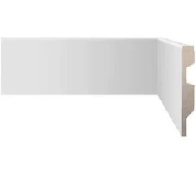

Rodapé Cerâmico Liso Branco
Descrição do Produto
O Rodapé Cerâmico Liso Branco é essencial para um acabamento impecável entre o piso e a parede. Além de proteger a base da parede contra impactos e umidade, confere um visual limpo e elegante ao ambiente. Disponível em acabamento brilhante ou acetinado.
Detalhes Técnicos
- Código: RCL-011
- Dimensões Padrão: 60cm x 10cm (Comprimento x Altura)
- Espessura: 8mm
- Material: Cerâmica esmaltada
- Acabamento: Brilhante ou Acetinado
- Cor: Branco
- Indicação de Uso: Acabamento da junção entre piso e parede em ambientes internos.
- Unidade de Venda: Peça ou Metro linear